Fashion Police
Een slimme spiegel die je outfit beoordeelt, en je met complimenten en kritiek verleidt om steeds meer van jezelf te laten zien.
- Mijn rol
- Creative technologist
- Sprint
- 1 van 3, afgerond
Sprint 1
Van de eerste afspraken met de opdrachtgever tot versie 2 en de sprint review.
Wat ik laat zien als creative technologist
Een creative technologist combineert creativiteit en technologie om interactieve, experimentele digitale ervaringen te bouwen. Hieronder zie je per competentie uit de BOKSA wat ik heb gedaan.
| Competentie | Wat ik deed |
|---|---|
| Persoonlijk leiderschap | Zelf contact gelegd met de opdrachtgever, feedback gevraagd en verwerkt, kritisch gereflecteerd op mijn eigen prototype en deze portfolio bijgehouden. |
| Analyseren en adviseren | De opdracht vastgelegd in een debrief, literatuuronderzoek en een stakeholderanalyse gedaan naar surveillance, en de demo van de docent kritisch bekeken. |
| Ontwerpen en realiseren | Prototypes gebouwd, de interactie ontworpen als een verhaal, ethiek en privacy meegenomen in het ontwerp, AI-modellen gekoppeld in de code, de app responsive gemaakt en getest met een gebruiker. |
| Managen en samenwerken | Stap voor stap gewerkt en steeds verbeterd, meetings georganiseerd, het samenwerkingscontract opgesteld, het team ondersteund en het proces gedocumenteerd. |
1. Afspraken met de opdrachtgever
Debrief opstellenPersoonlijk leiderschap
Dark Tech gaat over technologie die er onschuldig uitziet, maar iets van je wil. Onze opdrachtgever wilde een spiegel die een oordeel velt over je outfit. Het donkere zit niet in het oordeel zelf, maar in wat het met je doet: na een irritante opmerking wil je jezelf verdedigen, nog een foto maken en nog iets vertellen. Precies die reacties leveren de data op.
Ik nam het eerste contact op met de opdrachtgever en plande de kennismaking. Na het gesprek zetten we alles in een debrief, en die stuurde ik terug ter controle. Zo wisten we zeker dat we de opdracht goed begrepen.
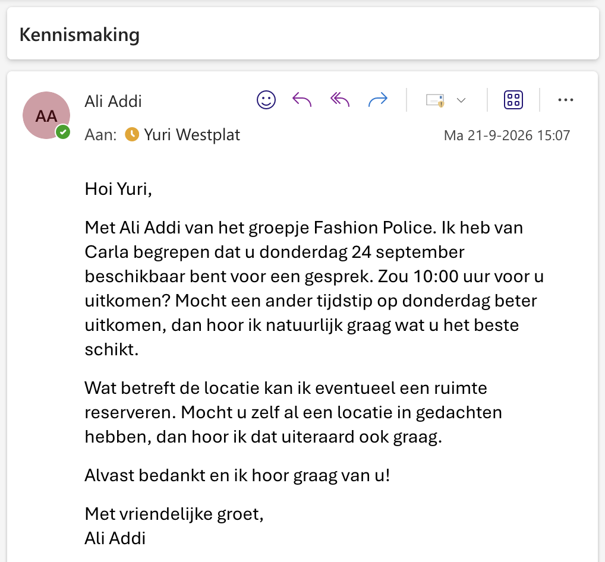
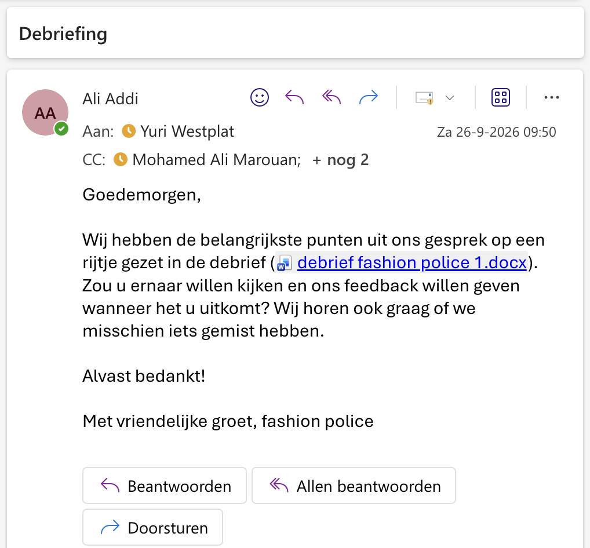
Wat we afspraken
- Gezichten worden nooit opgeslagen en nooit getoond (AVG).
- De interactie moet direct te snappen zijn, zonder uitleg vooraf.
- Aan het einde toont de spiegel statistieken over wat hij heeft verzameld.
- Elke sprint review is een demo van iets dat werkt, zonder PowerPoint.
2. Aan de slag als team
Managen en samenwerkenStakeholderanalyseLiteratuuronderzoek
Met die afspraken op papier gingen we als team van start. Ik had meerdere rollen. Ik was de developer die de app werkend kreeg en uitbreidde met creatieve ideeën. Ik was het aanspreekpunt voor de opdrachtgever, en ik zorgde ervoor dat iedereen zich goed voelde binnen het team.
Eerst maakten we duidelijke afspraken met elkaar. Daarna verdeelden we het onderzoek, zodat iedereen een eigen onderwerp had. Al aan het begin van de sprint leerde ik hoe belangrijk het is om rustig te blijven als er iets misgaat.
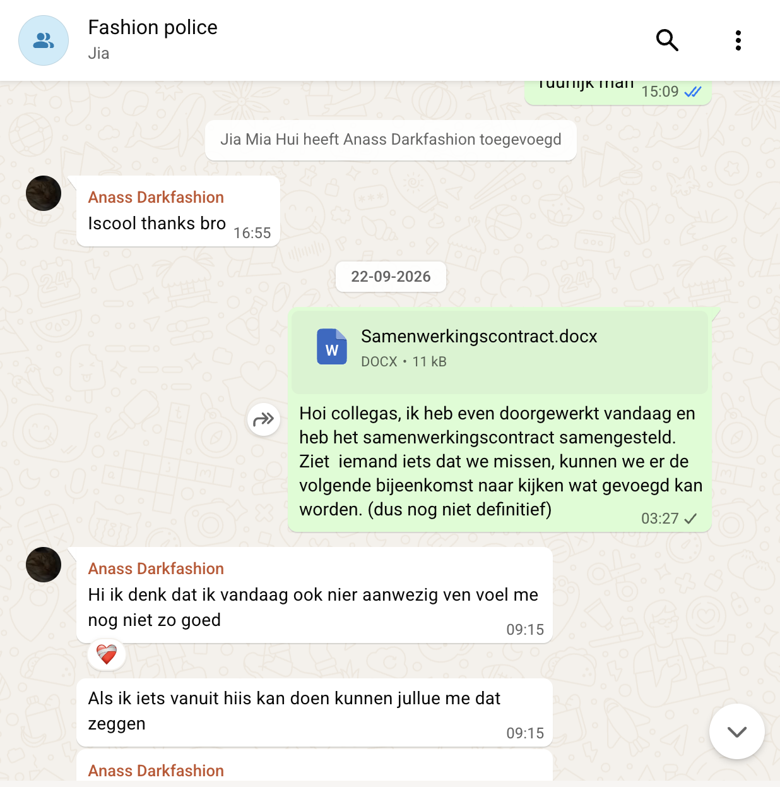
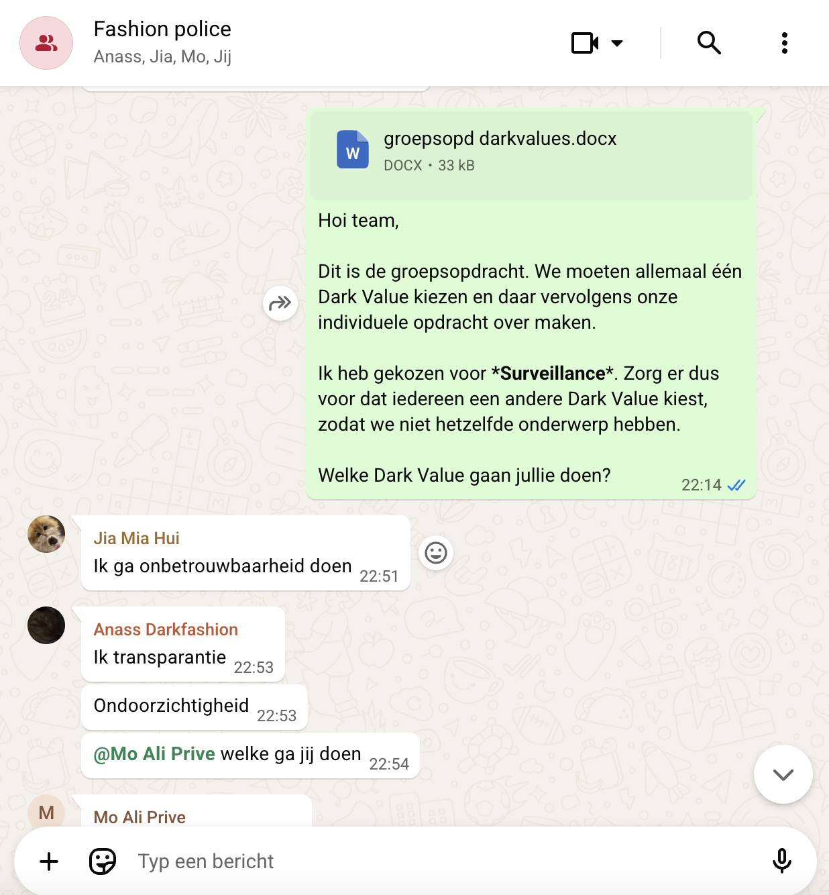
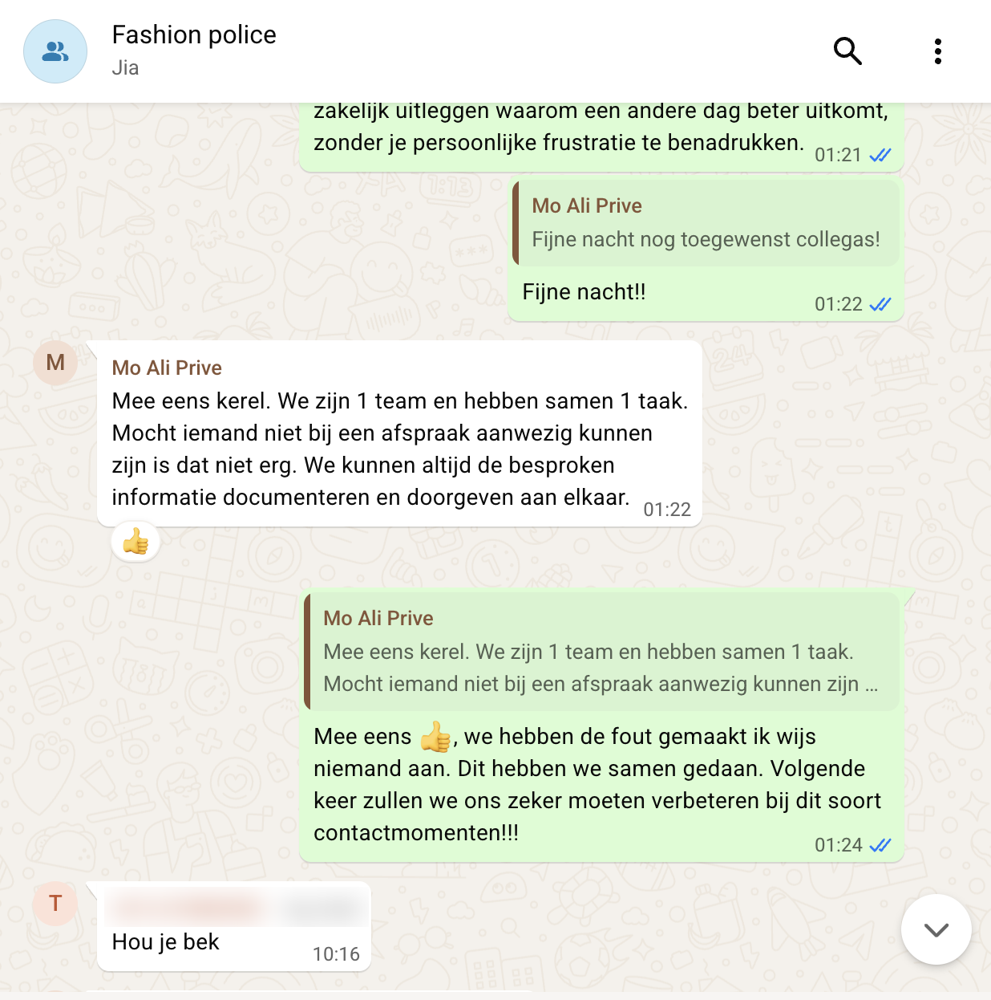
3. Versie 1: begonnen met bouwen
Inspiratie zoekenPrototypenInteractie ontwerpenRekening houden met ethiek
Voordat ik begon met bouwen, liet onze docent een demo zien als inspiratie. Daarin houd je een hand voor je gezicht, en een cirkel laat zien wat er vervaagd wordt. Het idee klopte, maar het werkte alleen als je precies wist wat je moest doen. Een voorbijganger houdt niet uit zichzelf een hand voor zijn gezicht.
Daarom bouwde ik mijn eigen versie 1. Ik zette het project op mijn laptop en kreeg de app werkend. In mijn versie ligt de privacy bij het ontwerp, niet bij de gebruiker. Je hoofd moet boven de groene lijn blijven, anders gaat de scan niet door. Zo komt je gezicht nooit in beeld, en de spiegel ziet alleen je outfit. Ik maakte hem ook mooier, met duidelijke stappen: “Hoofd op de juiste plek”, “Blijf zo staan…”, “Even kijken…”.
Daarna maakte ik er een verhaal van: de spiegel geeft niet alleen een oordeel, maar reageert ook op wat er eerder gebeurde.
Wat ik uitprobeerde
- Positief en negatief om en om. Na testen werkte dat minder spannend. Ik koos voor positief bij foto 1 en 3 en kritiek bij de rest: na een compliment wil je er meer, na kritiek wil je jezelf bewijzen. De complimenten zijn er om mensen aan te trekken. Als de spiegel alleen kritiek geeft, haken mensen af en doen ze niet meer mee.
- Losse foto's of een verhaal. Losse oordelen voelden willekeurig. Nu reageert de spiegel op je vorige foto, en houdt hij een dossier bij met een ✓ of ✗ per foto.
- Een Instagram-twist. Bij foto 3 verschijnt er een QR-code op het scherm. Die scan je met je telefoon, en daar vul je je Instagram in. Daarna doet de spiegel alsof hij je profiel bekijkt. Doordat je zelf iets moet doen met je telefoon, heb je echt interactie met de spiegel en blijf je als gebruiker geïnteresseerd in wat er gaat gebeuren.
De app telt per bezoeker hoeveel foto's er gemaakt zijn. De kritiek gaat bewust alleen over kleding en nooit over iemands lichaam. Er staan vreemden voor de spiegel, en je wilt dat ze lachen, niet dat ze gekwetst weglopen.
scan_count = session.get('scan_count', 0) + 1
session['scan_count'] = scan_count
is_positive = scan_count in POSITIVE_SCANS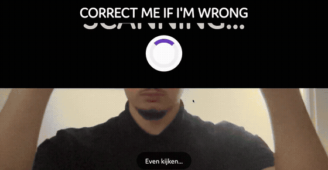
De Instagram-naam staat alleen in het geheugen, nooit in een bestand, en wordt gewist zodra het scherm hem heeft getoond.
if entry["handle"]:
# Direct wissen: we bewaren de naam niet.
handle = INSTA_TOKENS.pop(token)["handle"]
session['insta_done'] = True
return jsonify({'done': True, 'handle': handle})4. Feedback gevraagd
Feedback vragen en gebruikenPresenteren aan de opdrachtgeverProces documenteren
Ik wilde niet een hele sprint de verkeerde kant op werken. Daarom organiseerde ik een feedbackmoment met de opdrachtgever en Bas, en maakte ik de notulen. Die notulen stuurde ik daarna naar het team, zodat mijn groepsleden precies wisten wat er gedaan moest worden.
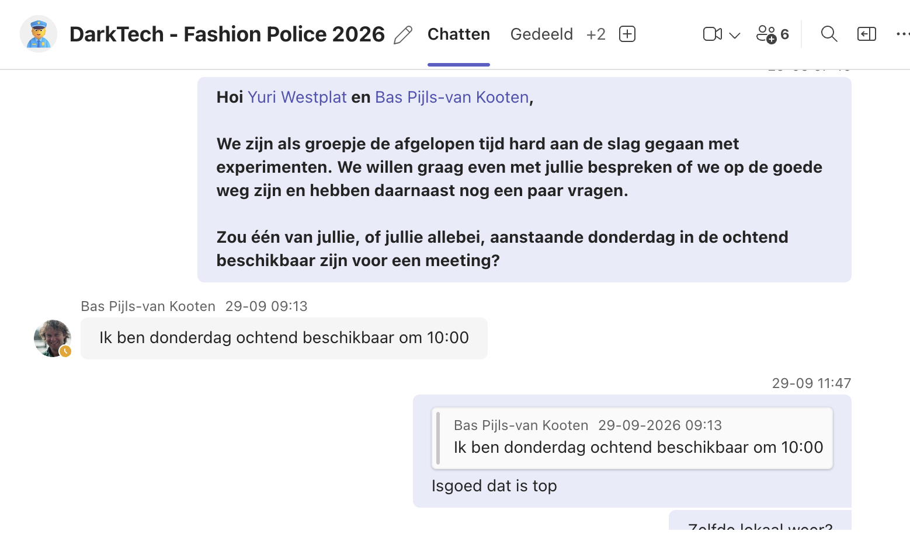
We zaten op de goede weg, want de opdrachtgever en Bas waren heel tevreden over wat we lieten zien. Uit het gesprek kwamen ook vier duidelijke punten om het nog beter te maken. Van elk punt maakte ik een SMART-leerdoel: specifiek, meetbaar, acceptabel, realistisch en tijdgebonden.
| Feedback | SMART-leerdoel |
|---|---|
| Makkelijk wisselen tussen AI's | Voor de volgende sprint review heb ik drie AI's (FashionCLIP, Claude en OpenAI) gekoppeld achter één instelling, VISION_BACKEND. Zo kan ik binnen één minuut wisselen, en dat laat ik live zien in de demo. |
| Iets over kleding laten zien | Voor de volgende sprint review herkent de spiegel bij elke foto minstens één kledingstuk en de kleur ervan, en gaat elke opmerking daarover. Ik test dit met minstens vijf verschillende outfits. |
| Leuk als jullie een eigen API-key kopen (niet verplicht) | Binnen deze sprint koop ik zelf API-tegoed, koppel ik een vision-model met mijn eigen key en bewaar ik die veilig in .env. Ik controleer dat de key niet op GitHub terechtkomt. |
| Iets doen met de telefoon | Voor de volgende sprint review kan een bezoeker met een QR-code de pagina /mobiel op zijn telefoon openen en daar zijn Instagram invullen. Ik test dit op minstens twee verschillende telefoons. |
5. Feedback verwerkt
Stap voor stap verbeterenProgrammeren met AI-modellenManagen en samenwerken
Met de feedback ging ik verder bouwen aan versie 1. Het belangrijkste punt was dat we niet vast moesten zitten aan één AI.
De AI is het deel van de app dat naar je foto kijkt en vertelt wat je aanhebt. Er zijn verschillende AI's die dat kunnen. Ik heb er drie gekoppeld, die we backends noemen: de AI's die achter de schermen het werk doen.
- FashionCLIP draait gratis op de laptop zelf, zonder internet.
- Claude en OpenAI draaien online bij een bedrijf. De app stuurt de foto via een API naar hun AI en krijgt een antwoord terug. Een API kun je zien als een loket waar je app een vraag stelt aan het systeem van een ander bedrijf.
Elke AI praat eigenlijk een beetje een andere taal. Daarom bouwde ik in clothing_detector.py een abstraction layer: een tussenlaag die het antwoord van elke AI omzet naar precies dezelfde vorm. Vergelijk het met een reisstekker die in elk stopcontact past: de rest van de app hoeft niet te weten welke AI er werkt. Met één instelling wissel je van AI:
BACKEND = os.getenv("VISION_BACKEND", "clip") # "clip", "claude" of "openai"De AI herkent nu kledingstukken en kleuren, en de opmerkingen van de spiegel gaan daarover. FashionCLIP doet dat met zero-shot classificatie. Dat betekent dat je het model niet eerst hoeft te trainen met duizenden voorbeeldfoto's. Je geeft gewoon een lijst woorden, zoals “hoodie”, “spijkerbroek”, “zwart” of “wit”, en het model kiest zelf welke het beste bij de foto passen.
Zelf een API-key gekocht
Om de online AI's te gebruiken heb je een API-key nodig. De opdrachtgever zei in het feedbackmoment dat het heel leuk zou zijn als we een API-key kochten. Het was niet verplicht, maar ik heb het toch gedaan om er het volle uit te halen. Ik kocht tegoed bij Anthropic, voor het vision-model Claude. Een vision-model is een AI die naar afbeeldingen kan kijken.
De API-key werkt als een sleutel: de spiegel stuurt de foto van je outfit samen met de key naar de AI. De AI kijkt welke kledingstukken en kleuren je draagt en stuurt dat terug. Elke foto kost een klein beetje tegoed. Als het op is, stopt de herkenning met deze AI.
De key is geheim, dus hij staat in een .env-bestand. Dat bestand staat in .gitignore, een lijst met bestanden die nooit op GitHub komen. Zo kan niemand anders mijn key zien of misbruiken.
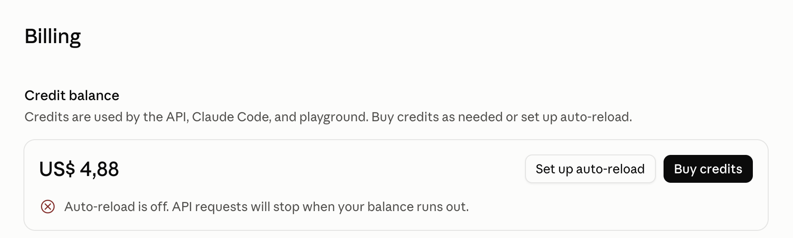
Daarnaast kwam er een telefoonversie via /mobiel. Als je de QR-code op de spiegel scant, opent die pagina op je telefoon en typ je daar je Instagram in. Zo gebruik je de spiegel en je eigen telefoon samen, en dat houdt je aandacht vast.
Tijdens het bouwen bleef ik ook het team in de gaten houden.
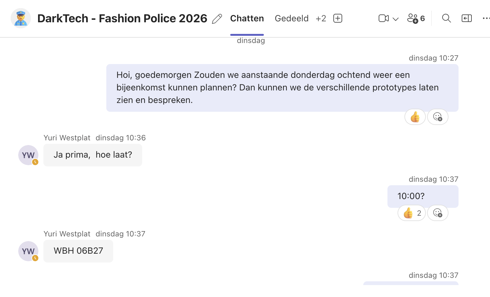
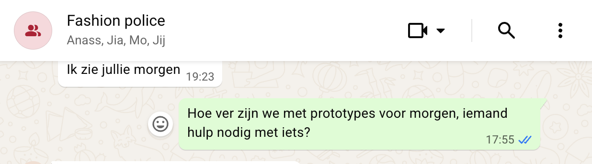
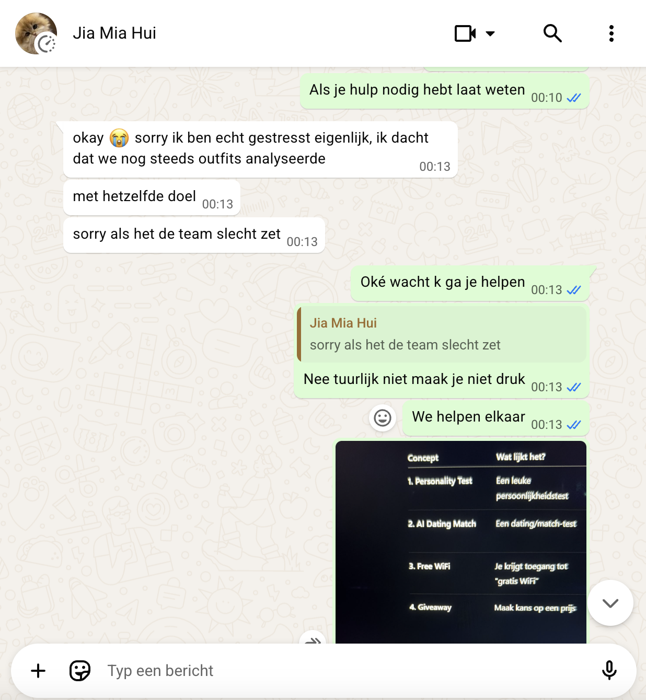
6. Onderzoek naar surveillance
LiteratuuronderzoekStakeholderanalyseRekening houden met ethiek
Iedereen in het team onderzocht een eigen dark value. Ik koos surveillance, omdat de camera de kern van ons project is. Surveillance betekent dat mensen bekeken of gevolgd worden, vaak zonder dat ze het weten of ervoor gekozen hebben. Mijn vraag was: welke risico's op surveillance ontstaan door Fashion Police, voor gebruikers, de opdrachtgever, omstanders en de maatschappij?
Ik deed literatuuronderzoek, een stakeholderanalyse en bekeek ons eigen prototype kritisch. Een belangrijk voorbeeld waren de reclamezuilen op NS-stations met verborgen camera's. Het bedrijf beloofde dat er niets werd opgeslagen, maar volgens de Autoriteit Persoonsgegevens mag het bekijken van mensen in de publieke ruimte meestal al niet. Daaruit haalde ik twee blinde vlekken in ons ontwerp:
- “We slaan niets op” is niet genoeg. Ook als je niets bewaart, kijkt de camera wel naar mensen. Ook omstanders die toevallig achter je langslopen.
- Een afmeldgebaar is geen echte keuze. Het idee was dat je een hand voor je hoofd houdt als je niet mee wilt doen. Maar wie dat gebaar niet kent, kan zich niet afmelden.
Wat het veranderde aan onze applicatie
Het onderzoek liet zien dat mijn keuze in versie 1, privacy in het ontwerp in plaats van een gebaar, de goede richting was. Voor versie 2 nam ik er deze punten uit mee:
- Het gezicht wordt nog beter afgeschermd: je hoofd valt in een zwart vak met “Identiteit afgeschermd”.
- Opslaan staat standaard uit. Pas als iemand het bewust aanzet, worden foto's bewaard, en dan alleen geanonimiseerd.
- De Instagram-naam blijft nooit bewaard en wordt direct gewist nadat hij op het scherm is getoond.
# Alleen opslaan op schijf als SAVE_TO_DISK aan staat
overlay_path = None
if SAVE_TO_DISK:
overlay_path = DATA_DIR / f"{record_id}_anonymized.jpg"
anonymized_overlay.save(overlay_path, format='JPEG', quality=95)De belangrijkste les voor mij: privacy gaat niet alleen over wat je bewaart, maar ook over wie je bekijkt.
PDFLees het hele onderzoek7. Versie 2
Stap voor stap verbeterenInterface ontwerpenRekening houden met ethiek
Met de feedback en mijn onderzoek heb ik versie 1 verder verbeterd tot versie 2. De opdrachtgever wilde graag dat hij ook op de telefoon werkt, dus ik heb hem responsive gemaakt. Daarnaast heb ik de privacy en de donkere kant van de spiegel sterker gemaakt.
Ik heb versie 2 ook veel speelser gemaakt. In versie 1 keek je vooral naar een scherm met tekst. Nu heb je echt een interactie met de spiegel: je zet je hoofd in het vak, de spiegel telt af, vergelijkt je met anderen, stelt je vragen en daagt je uit om het tegendeel te bewijzen. Daardoor blijven mensen langer staan en houdt de spiegel hun aandacht vast.
Lijnen die alleen jou volgen
Op het scherm zie je lijnen over je lichaam. Die lijnen volgen alleen de persoon die voor de spiegel staat, en niet de mensen die achter je langslopen. Zo zie je precies waarvan en van wie een foto wordt gemaakt. Dat sluit aan op mijn onderzoek: omstanders mogen niet ongemerkt in beeld komen.
Wat ik verbeterde ten opzichte van versie 1
| Onderdeel | Versie 1 | Versie 2 |
|---|---|---|
| Privacy | Je hoofd moest boven een groene lijn blijven | Je hoofd valt in een zwart vak met “Identiteit afgeschermd”. Lichaamslijnen volgen alleen jou, niet de mensen achter je. Zo zie je van wie de foto wordt gemaakt |
| Uitleg | Korte teksten | Duidelijke stappen: “Zet je hoofd in het zwarte vak”, “Handen naast je hoofd” en een aftelling met “Niet bewegen” |
| Oordeel | Alleen tekst | “Jouw outfit lijkt op…” met een plaatje, bijvoorbeeld een streetwear-icoon of een mislukte ninja. De AI noemt ook de kleur van je kleding |
| Vergelijken | Geen | Een ranking: “Jij scoort beter dan 94% van de bezoekers vandaag” |
| Na kritiek | Eén knop om opnieuw te proberen | “Bewijs het tegendeel” met een keuze uit twee herkansingen |
| Persoonlijke vragen | Alleen Instagram | Ook “Voor wie heb je je zo aangekleed?”: voor mezelf, een date, werk of school |
| Scherm | Vooral laptop | Responsive: werkt ook op de telefoon |
| Interactie | Vooral kijken naar tekst | Speels: aftellen, vergelijken, vragen en uitdagingen houden de aandacht van mensen vast |
| Stijl | Donker scherm | Bewakingscamera-look met REC, een subject-nummer en camerahoeken |
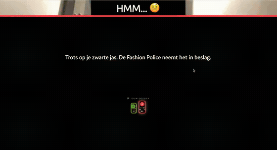
Vernederd, en weer op zoek naar erkenning
Na het compliment bij foto 1 slaat de spiegel om. Hij vernedert je en vertelt op een negatieve manier waar je outfit op lijkt, zoals “een mislukte ninja”, met een opmerking die over jouw kleding en kleur gaat. Daardoor wil je het compliment van de eerste foto terug. Je gaat weer op zoek naar erkenning, net als bij foto 1.
Je kunt daarna op een speelse manier je herkansing aangeven: met “Bewijs het tegendeel” kies je zelf hoe je jezelf wilt bewijzen. Zo blijf je foto's maken.
Wat je daarbij helemaal niet doorhebt, is dat je steeds meer over jezelf vertelt. Je geeft aan waar je naartoe gaat, waar je trots op bent en, het ergste, je Instagram. Precies dat is het donkere van de spiegel: hij voelt als een spelletje, maar ondertussen verzamelt hij informatie over jou.
Ook op de telefoon
De opdrachtgever wilde dat je de spiegel ook op je telefoon kunt openen. Daarom maakte ik de pagina responsive: alles past zich aan het kleine scherm aan.
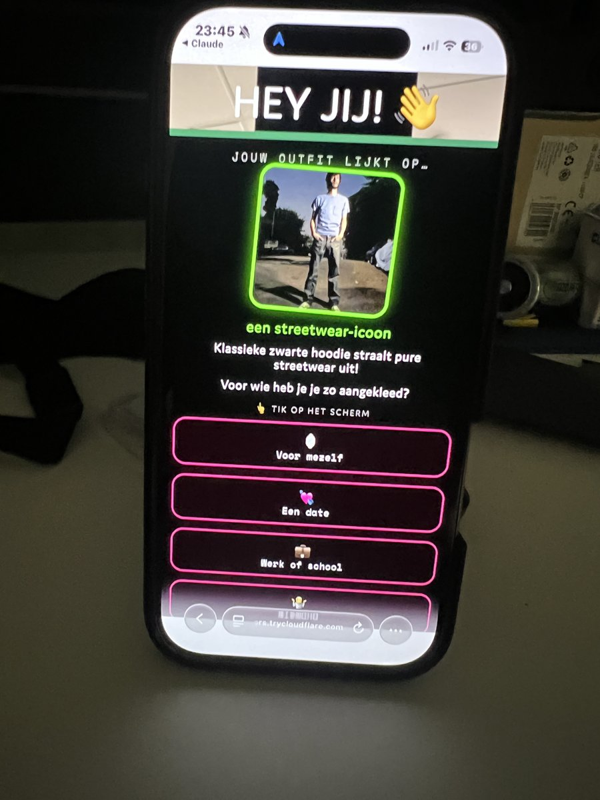
8. Getest met familie en vrienden
Testen met gebruikersSnel testen met gebruikers
Ik liet familieleden en vrienden versie 2 testen, zonder uitleg vooraf. Alleen deze vriend vond het niet erg om gefilmd te worden, en zijn reactie is ook heel leuk om te zien. Hij was verbaasd dat de spiegel kon zien welke kleur kleding hij aanhad. Dat laat zien dat de kledingherkenning echt werkt, en dat het voor gebruikers voelt alsof de spiegel meer ziet dan ze verwachten. Precies dat ongemakkelijke gevoel wil Dark Tech oproepen.
9. Sprint review
Demo gevenPresenteren aan de opdrachtgeverFeedback vragen en gebruiken
Na versie 2 en het testen hadden we de sprint review met de opdrachtgever. Daarin lieten we zien wat werkt, zonder PowerPoint, zoals afgesproken. De opdrachtgever was heel tevreden over het product en had er niet veel op aan te merken. In het feedbackformulier noemde hij “de veelzijdigheid van de oplossingen” het sterkste punt, en hij schreef: “Er zijn 4 werkende prototypes gedemonstreerd, zoals afgesproken. Goed gedaan.”
Volgende stappen
Dit project heeft drie sprints, en sprint 1 is nu voorbij. Voor de volgende sprint gaf de opdrachtgever deze stappen mee:
- De applicatie hosten, zodat hij online staat en niet alleen op mijn laptop draait.
- Meer dark patterns erin verwerken.
- De vier concepten aanhouden, ze stap voor stap verbeteren en testen, en daarna de meest aansprekende kiezen om te testen op Society 5.0.
10. Het resultaat van sprint 1
Demo gevenPrototypen
Aan het einde van sprint 1 staat er een werkende spiegel die op de laptop en op de telefoon werkt. Hij schermt je gezicht af, telt af, maakt een foto, herkent je kleding en de kleur ervan, en vergelijkt je met andere bezoekers. Na kritiek kies je een herkansing, en foto 3 vraagt om je Instagram, met de twist “ik neem mijn woorden terug”. Zo blijf je proberen en vertel je steeds meer over jezelf.
De opdrachtgever is heel trots op wat we in deze eerste sprint hebben neergezet.
Nieuwe functies in versie 2
- Kleding en kleur herkennen. Met de gekochte API-key ziet de spiegel welke kledingstukken je draagt en welke kleur ze hebben, en reageert daarop.
- “Jouw outfit lijkt op…” met een plaatje dat bij je stijl past.
- Ranking ten opzichte van andere bezoekers.
- Herkansing na kritiek, met “Bewijs het tegendeel”.
- Extra vragen, zoals “Voor wie heb je je zo aangekleed?”.
- Werkt op de telefoon, omdat de pagina responsive is.
11. Wat ik heb geleerd
Kritisch reflecterenReflecteren
Ik heb mijn leerpunten gekoppeld aan de vier competenties van een creative technologist uit de BOKSA.
Persoonlijk leiderschap
- Vroeg feedback vragen scheelt werk. Door zelf meetings te plannen met de opdrachtgever wist ik steeds of ik nog goed zat, en hoefde ik niet achteraf alles om te gooien.
- Rustig blijven werkt beter dan reageren. Toen er in het team iets misging, merkte ik dat een oplossing zoeken met mijn coach meer oplevert dan ingaan op een vervelende reactie.
Analyseren en adviseren
- Een debrief voorkomt misverstanden. Door de opdracht op te schrijven en terug te sturen naar de opdrachtgever, wisten we zeker dat we hetzelfde bedoelden.
- Onderzoek verandert je ontwerp. Door literatuuronderzoek en een stakeholderanalyse zag ik dat niet alleen de gebruiker, maar ook omstanders in beeld komen. Dat had ik zelf niet bedacht.
Ontwerpen en realiseren
- Privacy is een ontwerpkeuze. Het gaat niet alleen om wat je bewaart, maar ook om wie je bekijkt. Daarom hoort privacy in het ontwerp, niet in een gebaar dat de gebruiker moet kennen.
- Stap voor stap verbeteren en testen met echte mensen laat dingen zien die je zelf mist. Mijn vriend was verbaasd over iets wat ik zelf normaal vond: dat de spiegel kleuren herkent. Ook merkte ik dat niet iedereen gefilmd wil worden. Dat past precies bij het onderwerp van de spiegel.
- Programmeren met AI-modellen. Ik leerde meerdere AI's koppelen achter één tussenlaag, een API-key veilig bewaren, en fouten oplossen door eerst goed te lezen wat de terminal zegt.
Managen en samenwerken
- Overzicht houden helpt het hele team. Door notulen te delen, de dark values te verdelen en te vragen wie hulp nodig had, wist iedereen wat er moest gebeuren.
- Niet iedereen vraagt zelf om hulp. Een teamgenoot durfde het niet in de groepsapp te zeggen. Door privé te vragen kon ik toch helpen.
12. Wat ik volgende keer ga doen
ReflecterenTesten met gebruikers
- Meer experimenteren buiten mijn eigen kring. Ik ga vaker mensen opzoeken die ik niet ken, zoals voorbijgangers, en de spiegel met hen testen.
- Meerdere enquêtes maken. Zo verzamel ik de reacties van testers op een vaste manier en kan ik ze vergelijken.
- Meer dark patterns gebruiken. Zo wordt het donkere idee achter de spiegel nog sterker voor bezoekers.
- De applicatie hosten. Dan staat hij online en kan iedereen hem openen.
- Kleding nog meer centraal zetten, zoals de opdrachtgever in de sprint review vroeg.
Sprint 2
Hier komt de DevLog van sprint 2.
Sprint 3
Hier komt de DevLog van sprint 3.